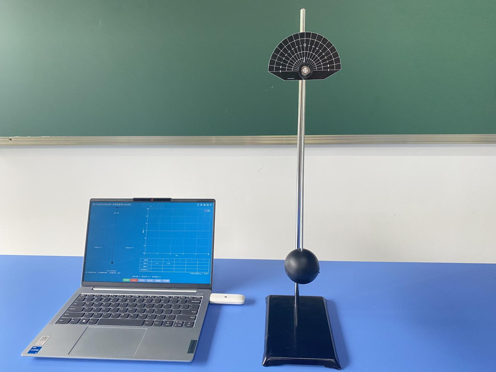
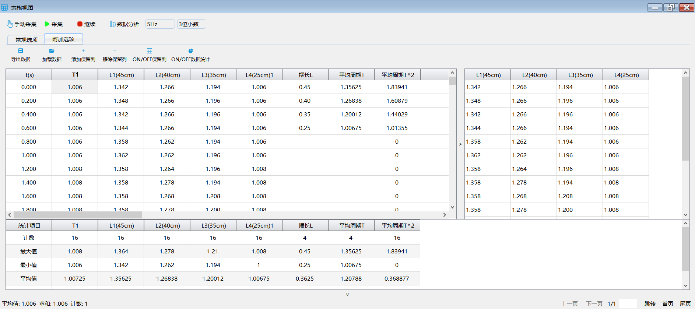
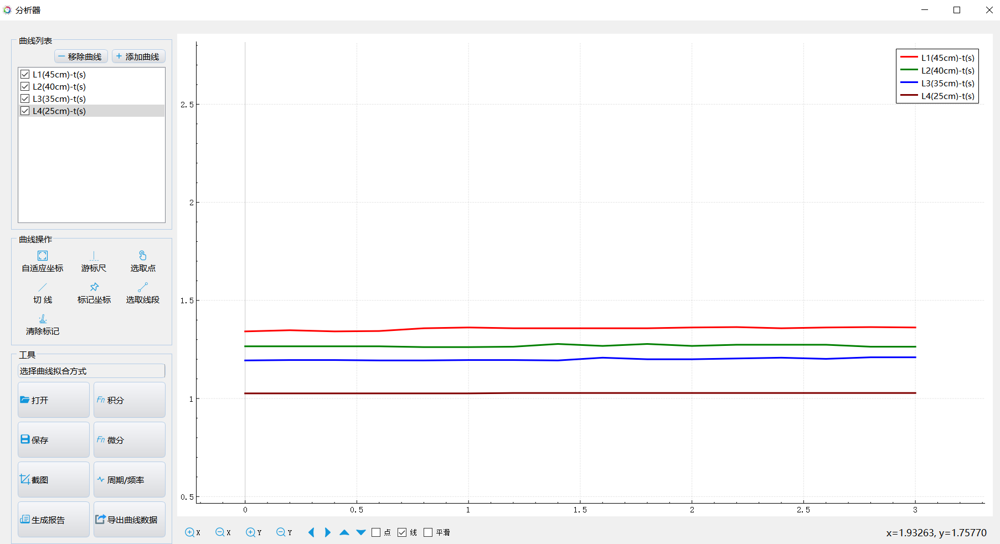
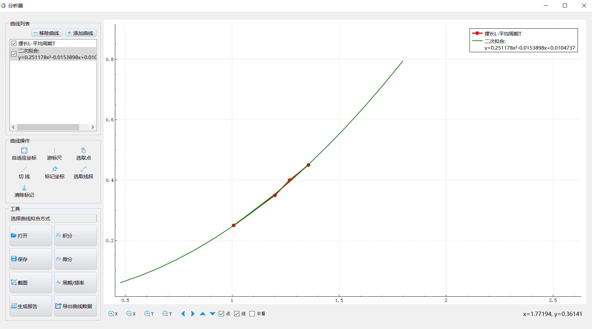
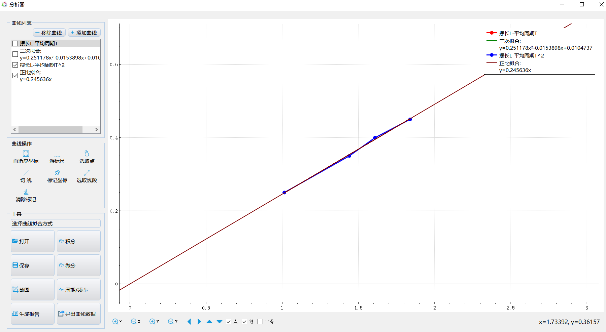

实验四十 单摆周期的测量
【实验目的】
测量单摆的周期，验证摆的等时性。
【实验原理】
单摆是能够产生往复摆动的一种装置，将无重细杆或不可伸长的细绳一端悬于重力场内一定点，另一端固结一个重小球，就构成单摆；在非常小的振幅（摆角小于5°时）下，单摆做简谐运动的周期跟摆长的平方根成正比，跟重力加速度的平方根成反比，跟振幅、摆球的质量无关，单摆运动的近似周期公式为：T=2π√(L/g)，其中，L为摆长，g为当地的重力加速度。
【实验器材】
数据采集器、单摆实验器、二维单摆接收器、计算机等。
【实验装置】

【实验操作步骤】
1.按实验装置图搭建好实验器材。
2.打开实验数据分析软件，连接好数据采集器和光电门传感器，将光电门传感器设置为“周期模式”；
3.打开“表格视图”，点击“采集”，将摆球拉离平衡位置，使摆线与竖直方向的夹角略小于5°，将摆球由静止释放；
4.在摆球摆动大约10个周期后点击“暂停”停止记录，统计出周期的平均值，并将实验数据重命名保存至保留列；
5.依次改变摆线的长度，重复上述实验步骤，将每次得到的实验数据重命名后添加至保留列；
6.将保留列中的数据添加回主表，点击“附加选项”，点击打开“数据统计”；
7.双击主表的空白表头添加数据列“线长L”和“平均周期T”，并将数据填入其中；点击“添加公式”添加数据列“平均周期^2”；
8.点击“数据分析”，做出各物理量之间的关系曲线并分析；


不同摆长时的周期曲线

摆长与周期的关系曲线

摆长与周期^2的关系曲线
【思考与讨论】
1.将两次实验的摆长和重力加速度大小代入单摆周期公式计算出对应的单摆周期的理论值，将实验得到的数据与理论值比较，计算实验的相对误差；
2.改用不同质量的摆球，测得的周期是怎样的？